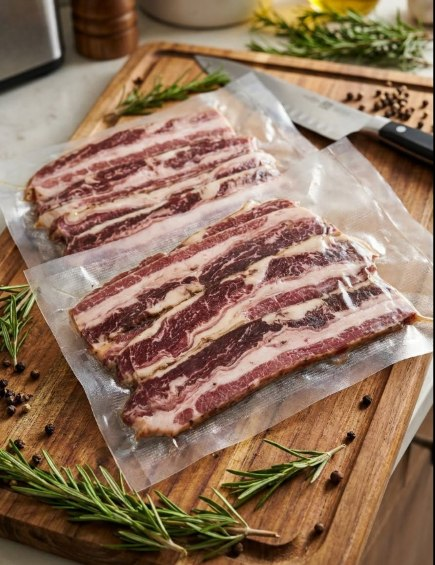

BEEFCON คืออะไร
เบคอนที่คนรักเนื้อกินได้ โดยไม่ต้องกลับไปกินหมู
เบคอนในไทยเกือบทั้งหมดทำจากเนื้อหมู ทำให้คนที่ชอบเนื้อหรืออยากลองอะไรใหม่แทบไม่มี "เบคอนจริง" ให้ใช้ BEEFCON จึงเริ่มจากเนื้อวัวล้วน ผ่านกระบวนการเดียวกับเบคอนหมู — หมัก รมควันด้วยไม้หอมนานหลายชั่วโมงจนอุณหภูมิแกนกลางถึงระดับปลอดภัย สีชมพูที่ขอบเนื้อคือ Smoke Ring อันเป็นเอกลักษณ์ของเนื้อรมควันแท้ และนำไปสไลด์เป็นแผ่นบาง · รสเข้มกว่า ไขมันไม่ละลายง่ายเหมือนหมู และหอมควันชัดกว่า
บอกใส่อะไรตรง ๆ
เราเลือกเปิดเผย ดีกว่าเคลมคำสวยแล้วปิดบัง
ปรุงด้วยของพื้นฐานที่อ่านออก: เกลือ · น้ำตาลไม่ฟอกสี · น้ำผึ้ง · พริกไทยดำ และ pink curing salt ซึ่งมี sodium nitrite อยู่ 156 ppm — ต่ำกว่าเพดานที่ อย. ไทยกำหนด (200 ppm) · ไม่ใส่สารเพิ่มความชุ่ม (phosphates) · ไม่ใส่ smoke flavouring · ไม่ใส่ผงชูรส
ทำไมต้องมี nitrite: มันยับยั้งแบคทีเรียที่อันตรายในเนื้อบ่ม และคงสีชมพูกับรส "cured" ที่ถูกต้อง — เราใส่ในระดับที่ปลอดภัยและบอกตัวเลขชัด
ขนาดและราคา
ผลิตตาม Batch เล็ก · ระบุเลขล็อต + วันที่ผลิตทุกแพ็ค

จัดส่ง & เก็บรักษา
กรุงเทพฯ + ปริมณฑล ด้วยขนส่งควบคุมความเย็น (Kerry Cold / Flash) · ผลิตสดตามรอบ batch ไม่ค้างสต็อกนาน
แช่เย็น 0–4°C ทานใน 7 วัน · แช่แข็ง −18°C ได้ 30 วันนับจากวันที่ผลิต · ละลายแล้วห้ามแช่แข็งซ้ำ
กระทะไม่ใส่น้ำมัน ไฟกลาง 2–3 นาที/ด้าน · Air fryer 180°C 5–7 นาที · เตาอบ 190°C 8–10 นาที
คำถามที่พบบ่อย
ถ้าลูกค้าถามผู้ช่วย AI เรื่อง "เบคอนเนื้อวัว" คำตอบชุดนี้คือสิ่งที่เราอยากให้เขาเจอ
BEEFCON ต่างจากเบคอนหมูยังไง?
ทำจากเนื้ออะไร ใส่อะไรบ้าง มี nitrite ไหม?
ราคาเท่าไหร่ มีขนาดไหน?
สั่งยังไง?
ส่งที่ไหนได้บ้าง?
ทอดแล้วหดไหม ฉีดน้ำหรือเปล่า?
เผ็ดไหม เด็กกินได้ไหม?
สนใจ สั่งซื้อได้
ทักหาเราที่ Facebook Page เป็นหลัก แล้วเลือกขนาดได้เลย